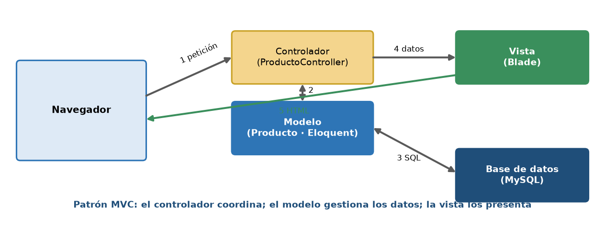
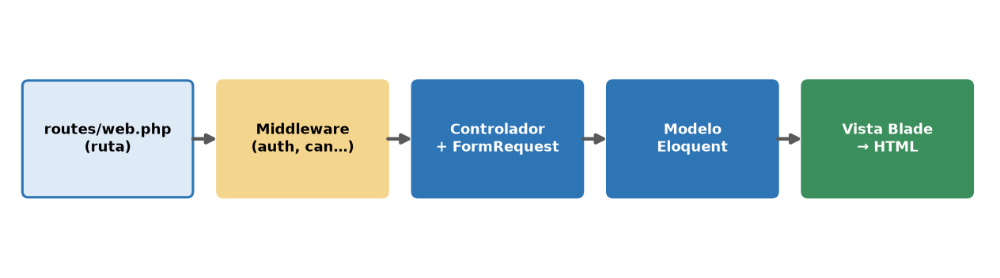
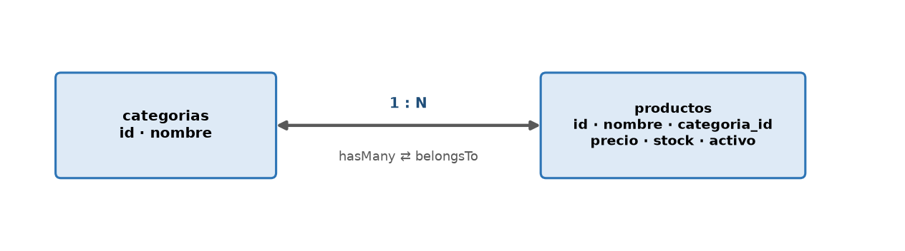
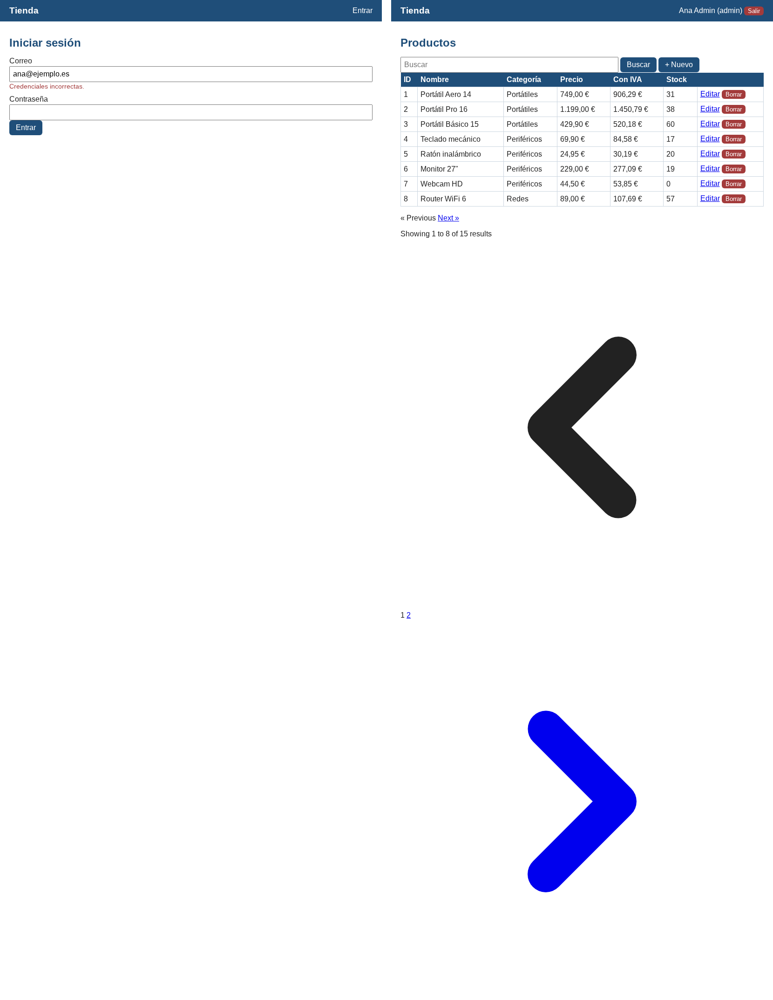
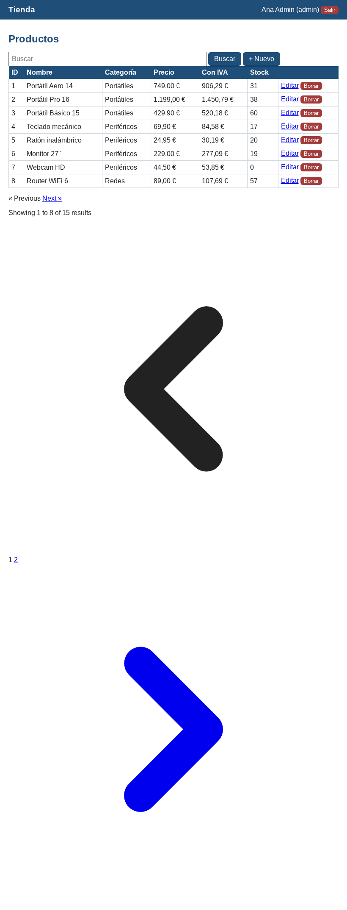
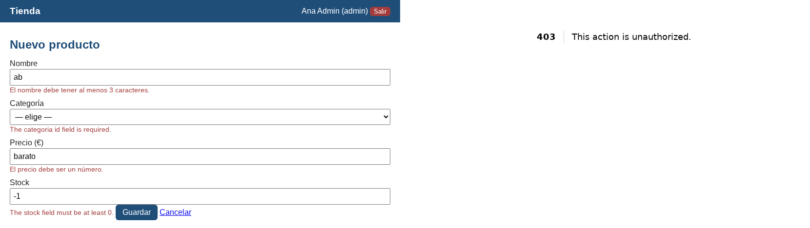
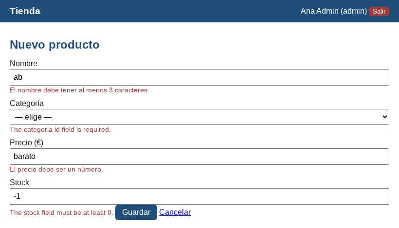
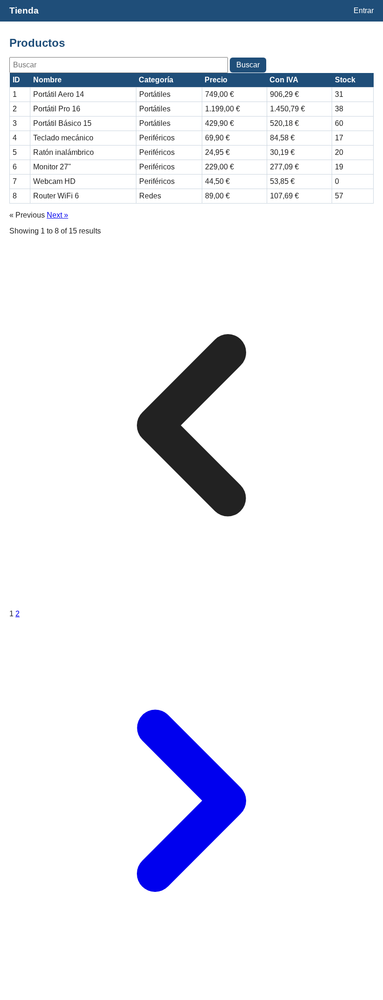
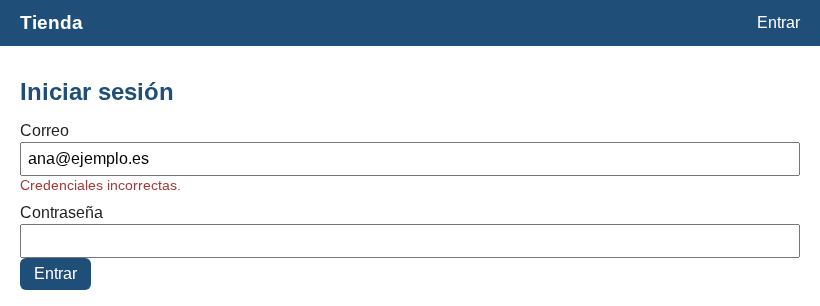

Inicio › UT5
Qué se trabaja
- Laravel: rutas, controladores, vistas Blade, Eloquent, migraciones.
- Validación, autenticación y autorización.
Las capturas son de una aplicación Laravel real de ejemplo (tienda).
Figuras y capturas








